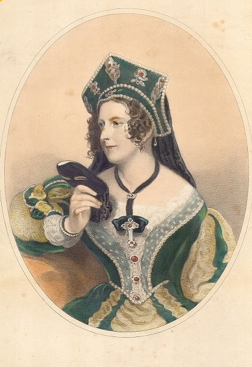

Before you listen, try to answer these questions.
Listen and check your ideas from the previous task. Listen many times!
What does the tea mean to the British? A lot, according to recently de-classified top-secret documents from the cold war. The documents show that government officials were really concerned about the tea supply in the event of a nuclear war. “The tea situation would be ‘very serious’ if there was a widespread attack on Britain by both A bombs and H bombs,” the report reads. “If Britain were bombed, 75% of tea supplies would be lost. Substantial delays in imports and with no system of rationing would mean that there wouldn’t even be half a kilo of tea per person per week. That is half of the tea ration during a war, and enough for a cup or two a day.” But why the fear?
Tea has been considered “morale-boosting” ever since the Second World War. Prime Minister Winston Churchill once called tea “more important to the soldiers than munitions”. He believed that tea was a part of the British character, and that if people did not have enough, the country would be in trouble.
So, where did this obsession for tea come from? Even though tea is the unofficial national drink now, it is relatively new. It first appeared in Britain in the late 17th century. It was King Charles II’s Portuguese wife, Catherine of Braganza, who brought tea to the royal court. However, the British tea trade didn’t take off for another century. One of the first tea salesmen was Thomas Garway, who had a shop in Exchange Alley. By 1657, he sold liquid and dry teas. Selling it for as much as £6 and £10 for half a kilo. He claimed tea made the body “active and lusty,” and it “preserves perfect health until extreme old age.” By 1750, over 500 coffee houses were selling tea. ✪
Read the text again and highlight five key words or expressions. Compare your key words with your partners. Did you identify the same words? Now explain, in your own words, why the tea situation was described as serious in the cold war? Use the key words that you highlighted before.
Did you notice the use of “take off” in the article? “Take off” is commonly used to describe the action of a plane leaving the ground. Here, we have another interesting use. Read the sentence from the article again. “However, the British tea trade didn’t take off for another century.” What is the meaning of the phrasal verb?
The idea of “afternoon tea” was invented by the Duchess of Bedford in the early 1800s. At the time, the duchess was tired of waiting until  8 pm for dinner, and began to take a “high tea”. The idea spread to the middle classes, and is now a staple in British life. The tea shop can also be attributed to a single person. In 1864, the manager of the Aerated Bread Company began serving food and drink to clients. She gave tea to the people she liked best. Soon, everyone wanted it, and the tea shop was born. Today, Brits drink over 165 million cups of tea a day, compared to only 70 million cups of coffee daily.